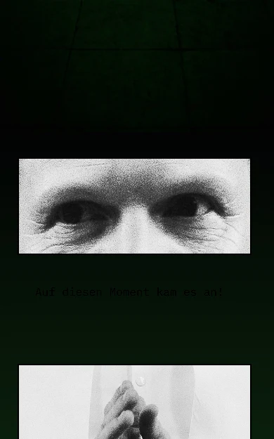
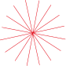
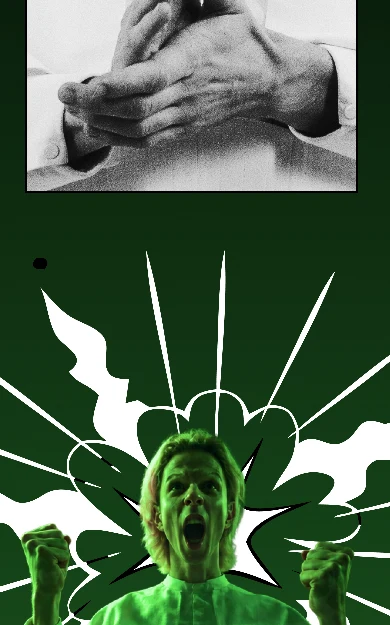
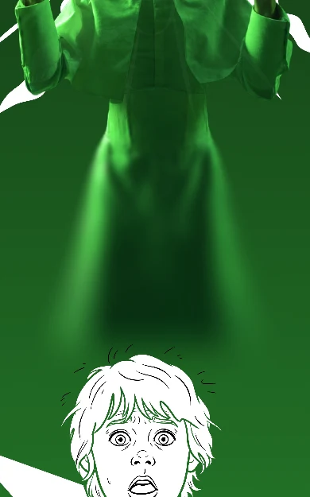

Alle warteten auf ihn – nur er nicht.Everyone waited for him – except him.Alle warteten auf ihn – nur er nicht.KO fehlt39
DE ★: Alle warteten auf ihn – nur er nicht. · Original kopieren


Wo bist du?!
⚠ verdeckt 39
„Erzähler“ – ein Tipp setzt ihn hier
40

41

Unterdessen …ErzählungWo gehst du hin?RedeHat sie mich …GedankeBam!LautmalereiEs war die Nacht …Geschichte19 Ext. PoolSzeneIch will eine Wolke …Liedtext
WO BIST DU?!
Alle warteten auf ihn…⚠
Im Dom war es still…
Gurke
Ornament · starburst-red-2
Alle warteten auf ihn…⚠
DEENKO
qwertzuiop
asdfghjkl
⇧yxcvbnm⌫
123🌐Leerzeichen↵
Text. ‹ zurück zu den Arten · Text (gedrückt: ein Tipp auf freien Canvas setzt einen Text) · Text-Vorlagen ·
Inspector – ohne Beschriftung. Ein Tipp auf einen bestehenden Text = bearbeiten (Cursor im Text).
Text-Vorlagen – die echten: Erzählung, Rede, Gedanke, Lautmalerei, Geschichte, Szene, Liedtext (+ eigene). Rede und
Gedanke sind die eckige Box mit Zeiger, keine Ovale. Wählen, dann tippen.
Lange drücken auf einen Text: Kopieren · Ausschneiden · Löschen · Bearbeiten (Stift) – nur Icons, gleich große Quadrate wie unten, ein kräftiger Rahmen um die Gruppe.
Ebenen: eine flache Liste dieser Szene, vorne zuerst – ohne Kopfzeile, ohne Slices (die sind der Hintergrund).
Die Zeile unten: ‹ · Ebenen · Inspector.
Lange drücken auf eine Zeile: dieselbe Gruppe – Kopieren · Ausschneiden · Löschen · Bearbeiten.
Links am Griff lange drücken und ziehen: die Ebene wandert – die blaue Linie zeigt, wohin („Alle warteten …“
nach hinten, unter „Im Dom …“). Nach vorn / Nach hinten brauchen keine eigenen Knöpfe mehr.
Text am Ort bearbeiten: ein Tipp auf einen Text (oder der Stift) – der Cursor steht im Text, die
Tastatur kommt, Leiste und Blatt treten zur Seite; der Text darf über die Naht reichen. ✕ = die alten Worte zurück, ✓ = fertig.
DE ★
EN
KO
Sprache beim Bearbeiten: der Schalter über der Tastatur IST der Sprach-Schalter des Kopfes (der ist beim
Tippen weg) – die Sprachen des Toons, ★ = Quelle, ein roter Punkt = Übersetzung fehlt (Wörter nur als Tooltip); er stellt die ganze Ansicht um. Übersetzung: darunter die Quelle als
graue Zeile + „Original kopieren“, wie im Inspector. ✕ erscheint erst nach einer Änderung.
Leere Übersetzung (KO): im Kasten die Quelle grau als Platzhalter, „KO fehlt“ am Kasten, darunter die
Quelle + „Original kopieren“. Nichts geändert: kein ✕ – sein Platz bleibt frei, nichts springt.